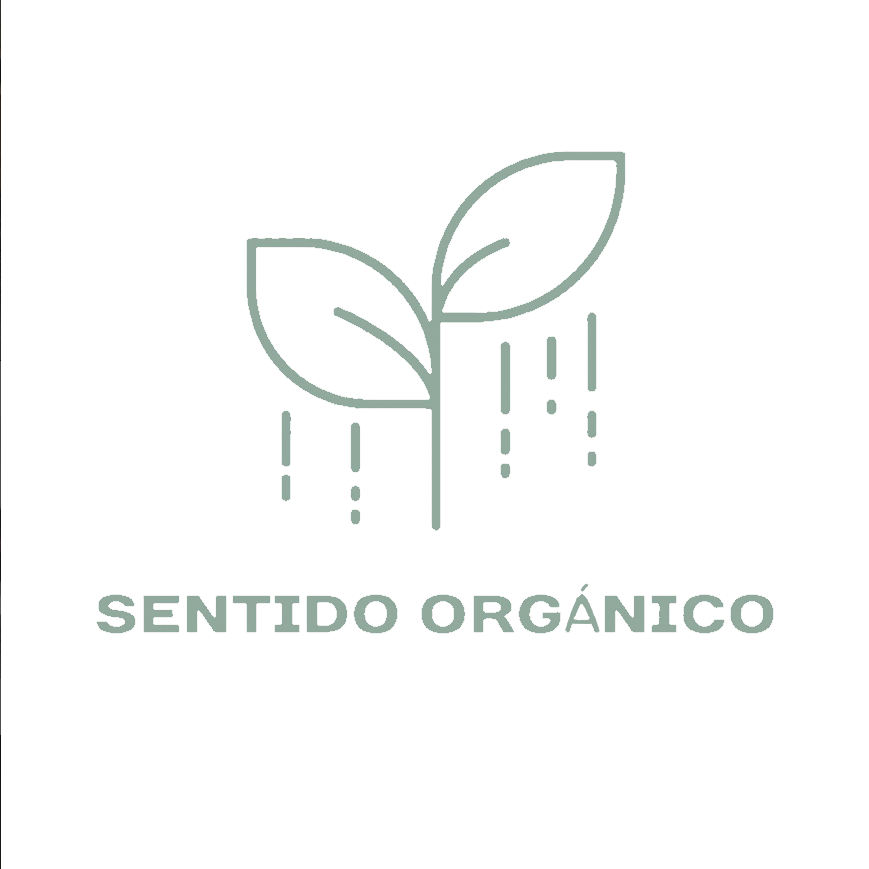
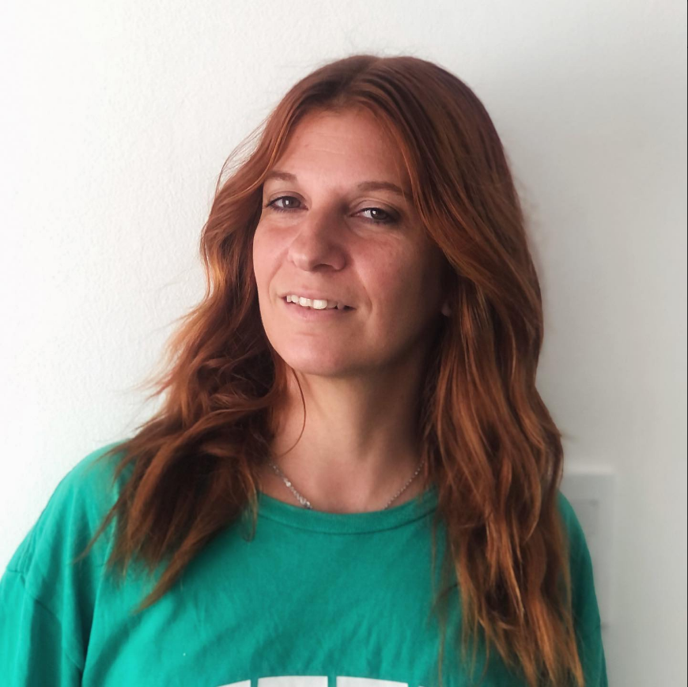

Estética y peluquería orgánica
Sentido Organico
Elegi priorizar tu salud capilar

Trabajos de color con productos naturales y orgánicos, cortes, tratamientos, peinados y maquillaje para eventos

Coloración con productos naturales y orgánicos, sin amoníaco ni químicos agresivos.
Conoce quien esta detrás de Sentido Orgánico

"La peluquería cambia, y yo también he cambiado con ella. Hoy mi enfoque está mucho más centrado en color,técnica y salud capilar. Porque crecer no siempre significa hacer más , a veces significa tener en claro que SI quieres seguir haciendo ❤️🌿🌿"
En Sentido Orgánico, apostamos por una experiencia personalizada, tranquila y cuidada. Ofrenciendo servicios de alta calidad con productos naturales y orgánicos, eligiendo priorizar tu salud capilar.
Guemes Norte 1774, Tandil, Argentina
Reserva tu turno en 3 simples pasos